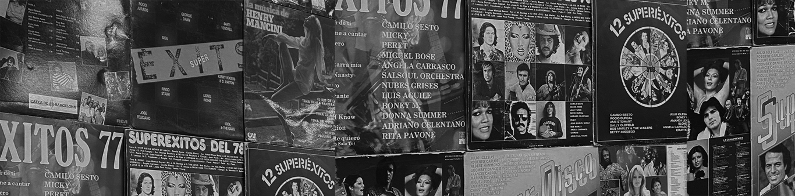

My name is Aisa Szakal, and I’m from Budapest, Hungary.
I began studying ICT because I wanted to learn more about technology and the
way the world goes forward to. Now, my interests have expanded to the design
part as well, where I can express my creative ideas visually.
I took a course about artificial intelligence, and statics so I can balance
both my creative and analytical skills. I'm passionate about learning new
things and enjoy challenging both sides of my brain.
I am a curious and innovative person, throug my previous projects I realised,
that I enjoy doing research and then developing it into a media product (video,
sound recording).
I feel like I have a sense for beauty, which might be a cause effect of my interest for arts from a young age.
However, I believe this is a great skill to have for anything that is design related.
